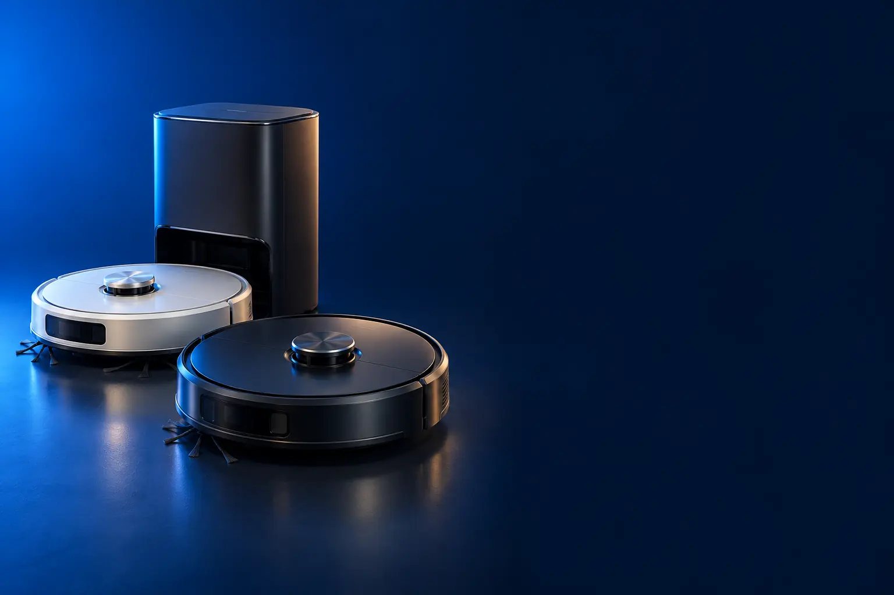

APARTAMENTO PEQUENO
Melhor robô aspirador custo-benefício para apartamento pequeno
Piso frio, poucos cômodos e orçamento curto. O robô certo mantém a poeira longe sem pesar no bolso.

Melhor custo-benefício para apartamentoXiaomi Robot Vacuum S40C
CURADORIA TECHAPROVADO · 2026
Apartamento pequeno, casa com cachorro ou quem não quer nem esvaziar o reservatório: cada casa pede um robô diferente. Separamos 17 modelos em 3 perfis, do custo-benefício ao top de linha, e dizemos para quem cada um vale a pena.

NOSSA LEITURA
Antes de olhar a sucção, olhe a sua casa: tamanho, tapete, pet e quanta manutenção você aceita fazer. Um robô com mapa e a escova certa rende mais que um número grande na caixa.
COMECE POR AQUI
APARTAMENTO PEQUENO
Piso frio, poucos cômodos e orçamento curto. O robô certo mantém a poeira longe sem pesar no bolso.
PET E TAPETES
Pelo no chão todo dia e tapete pela casa. Escova que não enrola e sucção que sobe no tapete fazem a diferença.

BASE QUE ESVAZIA SOZINHA
Não quer esvaziar reservatório nem lavar pano. A base guarda a sujeira por semanas e, nas melhores, cuida do pano.

A FICHA, TRADUZIDA
01 - NAVEGAÇÃO
Navegação é como o robô decide por onde andar. Os mais simples andam de forma aleatória: batem, viram e seguem. Com o tempo cobrem o chão, mas repetem lugares e esquecem cantos. Os que têm navegação a laser (LiDAR ou LDS, aquela "torrinha" em cima) medem a distância até as paredes e desenham a planta da casa.
Com o mapa, o robô limpa em linhas paralelas, sabe onde já passou e volta sozinho para a base. No aplicativo, dá para mandar limpar só a cozinha, marcar áreas proibidas (o canto dos fios, a tigela do pet) e agendar horários.
Nos modelos de topo, câmeras com inteligência artificial ainda reconhecem meia, cabo e pote de ração e desviam. Num apartamento pequeno e com poucos móveis, o aleatório resolve; numa casa com vários cômodos, o mapa faz diferença desde o primeiro dia.
02 - SUCÇÃO (Pa)
Pa (pascal) é a unidade que mede a força de sucção: quanto o robô "puxa" a sujeira do chão. No piso frio, como porcelanato e laminado, de 2.500 a 5.000 Pa já tiram a poeira, o cabelo e o farelo do dia a dia.
Números de 10.000 Pa ou mais fazem diferença no tapete, onde a sujeira e o pelo se escondem entre as fibras. Mais importante que o número é o robô perceber o tapete e aumentar a sucção sozinho (detecção de carpete), e levantar o pano para não molhar.
Cada fabricante mede a sucção do seu jeito, então use o Pa para comparar modelos da mesma marca, não marcas diferentes. Sucção alta também gasta mais bateria e faz mais barulho; quase todos deixam escolher o nível no aplicativo.
03 - ESCOVA
A escova principal fica embaixo do robô e é ela que varre a sujeira para dentro. A escova comum, de cerdas, funciona bem no piso, mas cabelo comprido e pelo de pet se enrolam nela, e de tempos em tempos é preciso cortar com tesoura.
Escovas de borracha, com pentes ou que cortam o cabelo durante a limpeza evitam esse enrosco. Para quem tem cachorro ou gato de pelo longo, ou gente de cabelo comprido em casa, isso pesa mais que qualquer número de sucção. Repare também nas escovas laterais, as "vassourinhas" que puxam a sujeira dos cantos: alguns modelos estendem a escova até o rodapé.
Escova é peça de desgaste. Antes de comprar, vale ver se as peças de reposição da marca são fáceis de achar no Brasil.
04 - BASE
A base é onde o robô volta para carregar. Nas simples, ela só carrega: o reservatório de pó do robô, de 250 a 520 ml, precisa ser esvaziado à mão, quase todo dia em casa com pet.
A base autoesvaziante puxa a sujeira do robô para um saco de 2,5 a 4 litros, que dura semanas. As bases completas também lavam o pano, secam com ar para não dar cheiro e reabastecem a água; algumas lavam com água quente.
O custo vem depois da compra: sacos e panos de reposição são vendidos à parte. A base completa também ocupa espaço, precisa de um canto fixo perto da tomada e, nas que lavam o pano, de alguém para encher a água limpa e jogar fora a suja.
05 - ALTURA E OBSTÁCULOS
A altura do robô decide se ele entra embaixo da cama e do sofá. Os mais baixos têm de 7,5 a 8,5 cm; os que têm a torre do laser em cima costumam passar de 9 cm. Meça o vão dos seus móveis antes de escolher.
Soleira de porta e tapete grosso são o outro obstáculo. A maioria passa por desníveis de cerca de 2 cm; alguns modelos de topo têm "pernas" retráteis e sobem até 6 a 8 cm. Se o robô vive preso na porta do banheiro, esse é o dado a olhar.
Para escadas, todos da seleção têm sensor que impede a queda, mas nenhum sobe degraus: em casa de dois andares, você leva o robô de um andar para o outro.
06 - PANO
O pano dos robôs mais simples é uma placa com um pano úmido que é arrastado pelo chão: tira poeira fina e deixa o piso com aspecto de limpo, mas não remove mancha seca.
Os panos que giram (dois discos) ou rolam (um rolo) fazem pressão e esfregam de verdade, o que ajuda com marca de patinha e respingo de cozinha. Os bons levantam o pano sozinhos ao chegar no tapete.
Mesmo os melhores não substituem um pano no chão de vez em quando. Pense no pano do robô como manutenção do dia a dia, não como faxina.
A CURADORIA EM DETALHE
17 modelos da pesquisa
PERFIL · 6 MODELOS, DA ENTRADA AO TOP DE LINHA
Para apartamento de piso frio, sem pet e com poucos tapetes. Aqui o robô não precisa de sucção de carro de corrida: precisa passar embaixo da cama, não cair da escada e, nos degraus de cima, saber onde já limpou. A escada começa no básico que anda aleatório, passa pelos modelos com mapa a laser e termina num com base que esvazia sozinha.

APARTAMENTO · ENTRADA 1 de 6
Aspira, varre e passa pano · 8 cm de altura
Ver preço na AmazonPOR DENTRO DA ESCOLHA
O robô mais simples que vale a pena: aspira, varre e passa pano, tem sensor antiqueda e só 8 cm de altura para entrar embaixo de cama e sofá. Ele não mapeia a casa: anda em modos aleatório, espiral e de bordas.
O W90 é o ponto de partida da categoria. Ele cumpre o básico sem complicação: liga, roda pela casa e recolhe poeira e cabelo do piso liso. O preço baixo vem de não ter navegação inteligente, por isso funciona melhor em ambientes pequenos e com poucos móveis. Se a casa tem vários cômodos ou tapetes, vale subir na escada.
| Funções | Aspira, varre e passa pano |
|---|---|
| Navegação | Aleatória, espiral e bordas (sem mapa) |
| Base | Não informada no anúncio |
| Reservatório | 250 ml |
| Altura | 8 cm |
| Sensores | Antiqueda e anticolisão (infravermelho) |
| Voltagem | Bivolt |
Fonte: ficha e descrição do anúncio, conferidas em 01/11/2026. Dados informados pelo fabricante. Nota e número de avaliações são de compradores, não teste do TechAprovado.

APARTAMENTO · INTERMEDIÁRIO 2 de 6
Filtro HEPA · aspira, varre e passa pano
Ver preço na AmazonPOR DENTRO DA ESCOLHA
O degrau acima do básico para quem tem alergia: o filtro HEPA Allergy Protect segura partículas finas e devolve um ar mais limpo. Mantém o 3 em 1 (varre, aspira e passa pano), com escovas laterais para cantos e sensor antiqueda.
O ERB10 resolve o mesmo problema do W90, com dois ganhos: o filtro HEPA, que faz diferença para quem tem alergia, e a marca Electrolux, com rede de assistência ampla. A navegação continua sem mapa, então o ganho é de filtragem e de bateria, não de inteligência.
| Funções | Aspira, varre e passa pano |
|---|---|
| Navegação | Sem mapa |
| Base | Não informada no anúncio |
| Filtro | HEPA Allergy Protect |
| Autonomia | Até 1h30 na descrição (2h20 no título) |
| Sensores | Antiqueda |
| Voltagem | Bivolt |
Fonte: ficha e descrição do anúncio, conferidas em 01/11/2026. Dados informados pelo fabricante. Nota e número de avaliações são de compradores, não teste do TechAprovado.

APARTAMENTO · ALTERNATIVA 3 de 6
Outro caminho: app e base de recarga
App, Alexa e Google · volta sozinho para a base · 7,5 cm
Ver preço na AmazonPOR DENTRO DA ESCOLHA
O robô básico que já conversa com o celular: tem app por Wi-Fi, funciona com Alexa e Google Assistente, vem com controle remoto e volta sozinho para a base de recarga. Com 7,5 cm de altura, é um dos mais baixos da seleção.
O W400 não é um degrau acima do ERB10, é outro caminho: troca o filtro HEPA pela conveniência do app, da voz e da base de recarga. Tem 3 níveis de sucção, reservatório de 300 ml e sensores antiqueda e de impacto. Mais de 1,6 mil avaliações, nota 4,2.
| Funções | Aspira, varre e passa pano |
|---|---|
| Navegação | Cantos, aleatória e espiral (sem mapa) |
| Base | Recarga, com retorno automático |
| Reservatório | 300 ml |
| Altura | 7,5 cm |
| Controle | App Wi-Fi, Alexa, Google e controle remoto |
| Voltagem | Bivolt |
Fonte: ficha e descrição do anúncio, conferidas em 01/11/2026. Dados informados pelo fabricante. Nota e número de avaliações são de compradores, não teste do TechAprovado.
APARTAMENTO · CUSTO-BENEFÍCIO 4 de 6
Melhor custo-benefício para apartamento
Mapa a laser · 5.000 Pa · aspira e passa pano
Ver preço na AmazonPOR DENTRO DA ESCOLHA
É aqui que o robô fica inteligente: a navegação a laser mapeia a casa, limpa em linhas e deixa você escolher cômodos e áreas proibidas pelo app Mi Home. A sucção de 5.000 Pa e o reservatório de 520 ml completam o pacote.
O S40C é o primeiro da escada com mapa a laser, e isso muda a experiência: o robô para de bater a esmo, cobre a casa inteira e volta sozinho para recarregar. Para apartamento de piso frio, é o ponto em que o preço e a inteligência se equilibram. Acima dele, você paga por marca ou por base, não por limpeza muito melhor no piso liso.
| Funções | Aspira e passa pano ao mesmo tempo |
|---|---|
| Navegação | Laser, com mapa no app |
| Base | Recarga (sem autoesvaziamento) |
| Sucção | 5.000 Pa |
| Reservatórios | Pó 520 ml · água 260 ml |
| App | Mi Home |
| Voltagem | Confira no anúncio |
Fonte: ficha e descrição do anúncio, conferidas em 01/11/2026. Dados informados pelo fabricante. Nota e número de avaliações são de compradores, não teste do TechAprovado.

APARTAMENTO · AVANÇADO 5 de 6
Para quem prefere marca com assistência
LiDAR · sobe soleira de 18 mm · 9,4 cm
Ver preço na AmazonPOR DENTRO DA ESCOLHA
Mapa a laser LiDAR, app com zonas proibidas e agenda, retorno automático à base e uma vantagem rara: passa por soleiras e tapetes de até 18 mm. Com 9,4 cm de altura, ainda entra embaixo da maioria dos móveis.
O RCV 3 é o degrau de quem valoriza marca, suporte e facilidade de passar por desníveis. Ele não ganha em sucção, mas a capacidade de vencer soleiras de 18 mm resolve um problema comum de apartamento: o robô que fica preso na porta do banheiro. Se a sua casa é toda plana, o S40C entrega o mesmo mapa por menos.
| Funções | Aspira e passa pano (seco, úmido ou combinado) |
|---|---|
| Navegação | Laser LiDAR, com mapa no app |
| Base | Recarga (sem autoesvaziamento) |
| Sucção | 2.500 Pa |
| Altura | 9,4 cm |
| Desníveis | Soleiras e tapetes de até 18 mm |
| Autonomia | 120 min |
Fonte: ficha e descrição do anúncio, conferidas em 01/11/2026. Dados informados pelo fabricante. Nota e número de avaliações são de compradores, não teste do TechAprovado.

APARTAMENTO · TOP DE LINHA 6 de 6
Top de linha para apartamento
LiDAR · base que esvazia sozinha (3 L) · 5.300 Pa
Ver preço na AmazonPOR DENTRO DA ESCOLHA
O topo do apartamento é a primeira base que esvazia sozinha: a sujeira vai para um saco de 3 litros que dura até 2 meses. O robô mapeia a casa com LiDAR, guarda mapas de mais de um andar, aspira e passa pano, e funciona com Alexa e Google.
O RV30 Max Plus junta o que os degraus abaixo separam: mapa a laser, como o S40C, e base autoesvaziante, que nenhum outro do perfil tem. A função Mesh Grid evita molhar os tapetes no modo pano, e ele volta sozinho para recarregar e retoma de onde parou. Mais de 1,3 mil avaliações, nota 4,2.
| Funções | Aspira e passa pano |
|---|---|
| Navegação | LiDAR + IMU, mapas de vários andares |
| Base | Esvazia sozinha (saco 3 L, até 2 meses) |
| Sucção | 5.300 Pa |
| Tapete | Mesh Grid evita molhar o tapete |
| Controle | App, Alexa e Google |
Fonte: ficha e descrição do anúncio, conferidas em 01/11/2026. Dados informados pelo fabricante. Nota e número de avaliações são de compradores, não teste do TechAprovado.
PERFIL · 6 MODELOS, DA ENTRADA AO TOP DE LINHA
Cachorro e gato soltam pelo todo dia, e pelo enrola na escova, gruda no tapete e enche o reservatório rápido. Neste perfil, o que pesa é escova antienrosco, sucção que aumenta sozinha no tapete e pano que se levanta para não molhar o tapete. Nos degraus de cima, a base também cuida da sujeira por você.
PET · CUSTO-BENEFÍCIO 1 de 6
Melhor custo-benefício para pet
15.000 Pa · escova antiembaraço · levanta o pano no tapete
Ver preço na AmazonPOR DENTRO DA ESCOLHA
Tudo o que o pelo pede, sem base cara: escovas com pente em Y e estrutura antiembaraço, sucção de 15.000 Pa e sensores que reconhecem o tapete, levantam o pano em 10 mm e aumentam a sucção. Os braços extensíveis levam escova e pano até a borda da parede.
O S40 Pro concentra o dinheiro onde o dono de pet mais sente: escova que não enrola, sucção alta e cuidado com o tapete. Limpa até 180 m² por carga, então serve também para casa maior. O que ele não faz é cuidar de si mesmo; para isso, a escada sobe para os modelos com base.
| Funções | Aspira e passa pano |
|---|---|
| Navegação | Mapa no app Mi Home |
| Base | Recarga (sem autoesvaziamento) |
| Sucção | 15.000 Pa |
| Tapete | Detecção ultrassônica · pano sobe 10 mm |
| Reservatórios | Pó 430 ml · água 310 ml |
| Bateria | 5.200 mAh · até 180 m² por carga |
Fonte: ficha e descrição do anúncio, conferidas em 01/11/2026. Dados informados pelo fabricante. Nota e número de avaliações são de compradores, não teste do TechAprovado.

PET · INTERMEDIÁRIO 2 de 6
13.000 Pa · escova toda de borracha · pano duplo giratório
Ver preço na AmazonPOR DENTRO DA ESCOLHA
O pano muda de nível: em vez de arrastar um pano parado, o sistema DuoScrub gira dois discos de fibra que tiram mancha de patinha e reduzem marcas de água. A escova principal é toda de borracha, o que segura o pelo sem enroscar, e o RoboSwing alcança os rodapés.
O L40 é o passo de quem já tem o pelo sob controle e quer chão limpo de verdade, não só sem poeira. Com 13.000 Pa, detecção ultrassônica de tapete e pano que se levanta 7 mm, ele cuida bem de casas com tapete e piso frio misturados. A bateria chega a 155 minutos no modo silencioso.
| Funções | Aspira e passa pano (2 discos giratórios) |
|---|---|
| Navegação | Mapa (Pathfinder) |
| Base | Recarga (sem autoesvaziamento informado) |
| Sucção | 13.000 Pa |
| Tapete | Detecção ultrassônica · pano sobe 7 mm |
| Escova | Toda de borracha, antienrosco |
| Bateria | 5.200 mAh · até 155 min |
Fonte: ficha e descrição do anúncio, conferidas em 01/11/2026. Dados informados pelo fabricante. Nota e número de avaliações são de compradores, não teste do TechAprovado.

PET · AVANÇADO 3 de 6
Base que esvazia, lava e seca a 45 °C · escova antiemaranhado
Ver preço na AmazonPOR DENTRO DA ESCOLHA
O primeiro da escada pet que cuida de si mesmo: a estação esvazia a poeira num saco de 2,5 L, lava o pano, reabastece a água e seca com ar a 45 °C, por até 68 dias sem você mexer. A escova flutuante com lâmina pente tira o pelo antes de enrolar.
O X10 Pro Omni é o degrau entre o L40, que ainda pede manutenção manual, e as estações mais caras. Os panos giram a mais de 180 rpm com 1 kg de pressão e sobem 12 mm no tapete. A navegação a laser com luz estruturada desvia de obstáculos no escuro, e o app mapeia até 5 andares. Mais de 3,6 mil avaliações, nota 4,0.
| Funções | Aspira e passa pano (2 panos giratórios) |
|---|---|
| Navegação | Laser iPath + luz estruturada |
| Base | Esvazia (saco 2,5 L), lava, reabastece e seca a 45 °C |
| Sucção | 8.000 Pa |
| Tapete | Pano sobe 12 mm |
| Ruído | Menos de 55 dB no modo silencioso |
| Voltagem | 220 V |
Fonte: ficha e descrição do anúncio, conferidas em 01/11/2026. Dados informados pelo fabricante. Nota e número de avaliações são de compradores, não teste do TechAprovado.

PET · ALTERNATIVA 4 de 6
Outro caminho: rolo que se limpa sozinho
Pelos de até 30 cm sem enrolar · base que esvazia, lava e seca
Ver preço na AmazonPOR DENTRO DA ESCOLHA
Feito para casa com vários pets: a escova dupla espiral lida com fios de até 30 cm sem enrolar, e o pano é um rolo que se limpa sozinho enquanto roda. A estação esvazia a poeira num saco de 3 L, lava o pano e seca com ar a 50 °C.
O C28 não é um degrau acima do X10 Pro Omni, é outro caminho: troca os panos giratórios por um rolo e foca em pelo: escova que não enrola, rolo de pano autolimpante e base que seca o pano para evitar cheiro. A navegação LiDAR desvia de objetos a partir de 3 cm, como potes de ração, mesmo no escuro e sem câmera.
| Funções | Aspira e passa pano (rolo autolimpante) |
|---|---|
| Navegação | LiDAR, desvia de objetos de 3 cm |
| Base | Esvazia (saco 3 L), lava e seca o pano a 50 °C |
| Sucção | 15.000 Pa |
| Pelos | Até 30 cm sem enrolar |
| Ruído | 54,89 dB |
| Voltagem | 100–127 V |
Fonte: ficha e descrição do anúncio, conferidas em 01/11/2026. Dados informados pelo fabricante. Nota e número de avaliações são de compradores, não teste do TechAprovado.

PET · AVANÇADO 5 de 6
19.000 Pa · reconhece comedouro e caixa de areia · base 8 em 1
Ver preço na AmazonPOR DENTRO DA ESCOLHA
O robô que entende a casa com pet: reconhece comedouro e caixa de areia para limpar em volta ou evitar, desvia de até 120 tipos de obstáculo e tem escova que corta o cabelo antes de enrolar. A base esvazia a poeira por até 100 dias e lava o pano com água a 75 °C.
O L40 Ultra AE junta tudo o que os degraus anteriores oferecem e acrescenta visão de obstáculos e estratégias de tapete (incluindo levantar o pano 10,5 mm). O MopExtend leva o pano até a base dos móveis. Faz sentido para quem limpa a casa toda pelo robô; para quem só quer o pelo fora do chão, o S40 Pro resolve por bem menos.
| Funções | Aspira e passa pano (MopExtend) |
|---|---|
| Navegação | Mapa · desvio 3DAdapt de 120 tipos de objeto |
| Base | Esvazia (até 100 dias), lava a 75 °C e seca o pano |
| Sucção | 19.000 Pa |
| Tapete | Pano sobe até 10,5 mm |
| Pet | Reconhece comedouro e caixa de areia |
| Escova | Multissuperfície que corta cabelo |
Fonte: ficha e descrição do anúncio, conferidas em 01/11/2026. Dados informados pelo fabricante. Nota e número de avaliações são de compradores, não teste do TechAprovado.

PET · TOP DE LINHA 6 de 6
Top de linha para pet
Sobe obstáculos de 6 cm · pelos de 30 cm sem enrolar · 20.000 Pa
Ver preço na AmazonPOR DENTRO DA ESCOLHA
O robô que vai a todo canto da casa com pet: pernas retráteis passam por soleiras e obstáculos de até 6 cm, o corpo abaixa para 8,9 cm para entrar embaixo do sofá e a escova DuoBrush lida com fios de até 30 cm sem enrolar. A base esvazia, lava, seca e higieniza com luz UV.
O X50 Ultra Complete é o topo pensado para casa difícil: a câmera com IA desvia de objetos, os braços Dual Flex estendem escova e pano até os cantos e há cinco modos para tapete, incluindo deixar os panos na base. A sucção chega a 20.000 Pa. Mais de 3,2 mil avaliações, nota 4,1.
| Funções | Aspira e passa pano (braços Dual Flex) |
|---|---|
| Navegação | Câmera com IA |
| Base | Esvazia, reabastece, lava, seca e higieniza com UV |
| Sucção | 20.000 Pa |
| Obstáculos | Sobe até 6 cm (pernas retráteis) |
| Altura | 8,9 cm com VersaLift |
| Voltagem | 127 V |
Fonte: ficha e descrição do anúncio, conferidas em 01/11/2026. Dados informados pelo fabricante. Nota e número de avaliações são de compradores, não teste do TechAprovado.
PERFIL · 5 MODELOS, DA ENTRADA AO TOP DE LINHA
Para quem quer mexer no robô o mínimo possível. A base autoesvaziante puxa a sujeira para um saco de 2,5 a 4 litros, que dura semanas. Subindo a escada, a base passa a lavar e secar o pano também. É o perfil para quem trabalha fora o dia todo ou simplesmente não quer pensar no assunto.

BASE · ENTRADA 1 de 5
Base autoesvaziante de 4 L · mapa a laser · 10.000 Pa
Ver preço na AmazonPOR DENTRO DA ESCOLHA
A porta de entrada da base autoesvaziante: ao voltar, o robô despeja a sujeira num saco descartável de 4 litros que segura até 90 dias de pó. Tem mapa a laser LDS, sucção de 10.000 Pa e escova em V contra cabelo enrolado.
O H40 resolve uma única coisa muito bem: a manutenção diária. Com o saco de 4 L, você esquece o robô por semanas. Para quem quer também o pano, o próximo degrau entrega as duas funções por pouco mais.
| Funções | Aspira (pano não citado no anúncio) |
|---|---|
| Navegação | Laser LDS 360°, com mapa |
| Base | Esvazia sozinha (saco 4 L, até 90 dias) |
| Sucção | 10.000 Pa |
| Escova | Em V, antiembaraço |
| App e voz | Xiaomi Home · Alexa e Google |
| Voltagem | 220 V |
Fonte: ficha e descrição do anúncio, conferidas em 01/11/2026. Dados informados pelo fabricante. Nota e número de avaliações são de compradores, não teste do TechAprovado.
BASE · CUSTO-BENEFÍCIO 2 de 5
Melhor custo-benefício com base
Esvazia sozinho por 90 dias · aspira e passa pano · 13.000 Pa
Ver preço na AmazonPOR DENTRO DA ESCOLHA
A combinação que a maioria procura: base que esvazia sozinha (saco de 4 L, até 90 dias) e robô que aspira e passa pano ao mesmo tempo. A sucção de 13.000 Pa aumenta sozinha no tapete, e a bateria limpa até 270 m² por carga.
O D15 Plus é o equilíbrio do perfil: base autoesvaziante, pano, Carpet Boost e mapa editável com vários andares. Para casa com mais de um piso, o mapeamento multinível evita refazer o mapa a cada mudança de andar. Os degraus acima entregam o cuidado com o pano, não mais limpeza no chão.
| Funções | Aspira e passa pano |
|---|---|
| Navegação | Mapa editável (Smart Pathfinder), multinível |
| Base | Esvazia sozinha (saco 4 L, até 90 dias) |
| Sucção | 13.000 Pa · Carpet Boost |
| Bateria | 5.200 mAh · até 300 min |
| Cobertura | Até 270 m² por carga |
| Pano lavado pela base | Não |
Fonte: ficha e descrição do anúncio, conferidas em 01/11/2026. Dados informados pelo fabricante. Nota e número de avaliações são de compradores, não teste do TechAprovado.

BASE · AVANÇADO 3 de 5
Outro caminho: base completa e corpo fino
Base que esvazia, lava e seca o pano · só 8,5 cm
Ver preço na AmazonPOR DENTRO DA ESCOLHA
Outro tipo de base: além de esvaziar a poeira, ela lava e seca o pano sozinha. O robô tem só 8,5 cm de altura, então entra embaixo de cama e sofá baixos, e o pano gira a 180 rpm com pressão para manchas.
O C20 Omni é o atalho mais barato para uma base completa. Ele troca um pouco de sucção pela comodidade do pano sempre limpo e pelo corpo fino, ótimo para casa com cama e sofá baixos. O pente Pro-Detangle tira o cabelo da escova sozinho.
| Funções | Aspira e passa pano (giratório, 180 rpm) |
|---|---|
| Navegação | Laser |
| Base | Esvazia, lava e seca o pano |
| Sucção | 7.000 Pa |
| Altura | 8,5 cm |
| Conexão | Wi-Fi 2,4 GHz · Alexa, Google e Siri |
| Garantia | 12 meses |
Fonte: ficha e descrição do anúncio, conferidas em 01/11/2026. Dados informados pelo fabricante. Nota e número de avaliações são de compradores, não teste do TechAprovado.

BASE · AVANÇADO 4 de 5
25.000 Pa · pano que se estende 4 cm · lavagem em alta temperatura
Ver preço na AmazonPOR DENTRO DA ESCOLHA
A base completa com sobra de potência: sucção de 25.000 Pa, panos duplos giratórios que se estendem até 4 cm para alcançar rodapé e pé de móvel, e base que esvazia por até 100 dias e lava o pano com água em alta temperatura.
O D30 Ultra soma o que os degraus anteriores separam: sucção de 25.000 Pa, pano que alcança cantos (MopExtend), vários modos para tapete e base que cuida de pó e pano. A bateria rende até 230 minutos no modo padrão. Se o seu piso é quase todo liso, o D15 Plus entrega boa parte disso por menos da metade.
| Funções | Aspira e passa pano (2 discos, MopExtend 4 cm) |
|---|---|
| Navegação | Smart Pathfinder e 3DAdapt |
| Base | Esvazia (até 100 dias), lava em alta temperatura |
| Sucção | 25.000 Pa |
| Tapete | Vários modos, com elevação do pano |
| Bateria | 5.200 mAh · até 230 min |
| Escova | Borracha flutuante, antienrosco |
Fonte: ficha e descrição do anúncio, conferidas em 01/11/2026. Dados informados pelo fabricante. Nota e número de avaliações são de compradores, não teste do TechAprovado.

BASE · TOP DE LINHA 5 de 5
Top de linha com base
Só 7,95 cm · 35.000 Pa · base 10 em 1 que lava a 100 °C
Ver preço na AmazonPOR DENTRO DA ESCOLHA
O ápice da automação: com 7,95 cm, é o robô mais fino da Dreame, e ainda supera degraus de até 8 cm. As câmeras duplas com IA reconhecem obstáculos, os panos giram a 230 rpm com água a 40 °C e a base 10 em 1 lava os panos a 100 °C, seca com ar quente e guarda o pó por 100 dias.
O X60 Max Ultra Complete soma sucção de 35.000 Pa, panos que se estendem até rodapé e pé de móvel (MopExtend), compartimento duplo de solução e modo de precaução com pets. É o topo da seleção em tudo, e o preço reflete isso. Cerca de 350 avaliações, nota 4,3.
| Funções | Aspira e passa pano (MopExtend, água a 40 °C) |
|---|---|
| Navegação | Câmeras duplas com IA |
| Base | 10 em 1: esvazia (100 dias), lava a 100 °C e seca com ar quente |
| Sucção | 35.000 Pa |
| Altura | 7,95 cm |
| Obstáculos | Supera degraus de até 8 cm |
| Voltagem | 127 V |
Fonte: ficha e descrição do anúncio, conferidas em 01/11/2026. Dados informados pelo fabricante. Nota e número de avaliações são de compradores, não teste do TechAprovado.
Nenhum modelo encontrado. Tente outro termo ou volte para Todos.
LADO A LADO
| Modelo | Perfil | Posição | Base | Destaque | Nota (avaliações) |
|---|---|---|---|---|---|
| WAP Robot W90 | Apartamento | Entrada | Não informada no anúncio | Aspira, varre e passa pano · 8 cm de altura | 4,3 (14,8 mil) |
| Electrolux ERB10 | Apartamento | Intermediário | Não informada no anúncio | Filtro HEPA · aspira, varre e passa pano | 4,3 (2,4 mil) |
| WAP Robot W400 | Apartamento | Alternativa | Recarga, com retorno automático | App, Alexa e Google · volta sozinho para a base · 7,5 cm | 4,2 (1,7 mil) |
| Xiaomi Robot Vacuum S40C | Apartamento | Custo-benefício | Recarga (sem autoesvaziamento) | Mapa a laser · 5.000 Pa · aspira e passa pano | 4,5 (778) |
| Kärcher RCV 3 | Apartamento | Avançado | Recarga (sem autoesvaziamento) | LiDAR · sobe soleira de 18 mm · 9,4 cm | 4,4 (86) |
| Tapo RV30 Max Plus | Apartamento | Top de linha | Esvazia sozinha (saco 3 L, até 2 meses) | LiDAR · base que esvazia sozinha (3 L) · 5.300 Pa | 4,2 (1,4 mil) |
| Xiaomi Robot Vacuum S40 Pro | Pet | Custo-benefício | Recarga (sem autoesvaziamento) | 15.000 Pa · escova antiembaraço · levanta o pano no tapete | 4,5 (485) |
| Dreame L40 | Pet | Intermediário | Recarga (sem autoesvaziamento informado) | 13.000 Pa · escova toda de borracha · pano duplo giratório | 4,3 (369) |
| eufy X10 Pro Omni | Pet | Avançado | Esvazia (saco 2,5 L), lava, reabastece e seca a 45 °C | Base que esvazia, lava e seca a 45 °C · escova antiemaranhado | 4,0 (3,6 mil) |
| eufy C28 | Pet | Alternativa | Esvazia (saco 3 L), lava e seca o pano a 50 °C | Pelos de até 30 cm sem enrolar · base que esvazia, lava e seca | 4,2 (159) |
| Dreame L40 Ultra AE | Pet | Avançado | Esvazia (até 100 dias), lava a 75 °C e seca o pano | 19.000 Pa · reconhece comedouro e caixa de areia · base 8 em 1 | 4,2 (1,5 mil) |
| Dreame X50 Ultra Complete | Pet | Top de linha | Esvazia, reabastece, lava, seca e higieniza com UV | Sobe obstáculos de 6 cm · pelos de 30 cm sem enrolar · 20.000 Pa | 4,1 (3,2 mil) |
| Xiaomi Robot Vacuum H40 | Base | Entrada | Esvazia sozinha (saco 4 L, até 90 dias) | Base autoesvaziante de 4 L · mapa a laser · 10.000 Pa | 4,4 (479) |
| Dreame D15 Plus | Base | Custo-benefício | Esvazia sozinha (saco 4 L, até 90 dias) | Esvazia sozinho por 90 dias · aspira e passa pano · 13.000 Pa | 4,2 (1,3 mil) |
| eufy C20 Omni | Base | Avançado | Esvazia, lava e seca o pano | Base que esvazia, lava e seca o pano · só 8,5 cm | 4,5 (33) |
| Dreame D30 Ultra | Base | Avançado | Esvazia (até 100 dias), lava em alta temperatura | 25.000 Pa · pano que se estende 4 cm · lavagem em alta temperatura | 4,4 (83) |
| Dreame X60 Max Ultra Complete | Base | Top de linha | 10 em 1: esvazia (100 dias), lava a 100 °C e seca com ar quente | Só 7,95 cm · 35.000 Pa · base 10 em 1 que lava a 100 °C | 4,3 (348) |
CONSIDERAÇÕES FINAIS
Aspira, varre e passa pano em apartamento pequeno de piso frio. Sem mapa, mas cumpre o básico.
Mapa a laser e app pelo preço de robô básico. O melhor custo-benefício para quem não tem pet.
Escova que não enrola, 15.000 Pa e pano que se levanta no tapete, sem pagar por base.
Base que esvazia sozinha por até 90 dias e robô que passa pano. O equilíbrio do perfil.
Os tops de linha (Dreame X50 Ultra Complete e X60 Max Ultra Complete) fazem sentido para quem quer delegar toda a limpeza do piso ao robô, inclusive o cuidado com o pano, e pode pagar por isso. Se a sua casa é pequena e de piso liso, o dinheiro rende mais em um degrau abaixo.
Depende da casa. Para apartamento sem pet, o Xiaomi S40C. Para casa com pet e tapete, o Xiaomi S40 Pro. Para quem quer base que esvazia sozinha, o Dreame D15 Plus. Para gastar o mínimo, o WAP Robot W90.
Funciona em tapetes baixos e médios, principalmente nos modelos que detectam o tapete e aumentam a sucção. Tapete felpudo alto e franjas costumam travar o robô; confira a altura de desnível que o modelo vence (o Kärcher RCV 3, por exemplo, informa 18 mm).
Não. Ele mantém o piso limpo no dia a dia, mas escada, móveis, rodapé alto e limpeza pesada continuam manuais. O pano do robô tira poeira e manchas leves; não substitui esfregar.
Vale para quem tem pet, casa grande ou simplesmente não quer esvaziar o reservatório quase todo dia. Considere o custo dos sacos de reposição e o espaço que a base ocupa.
Os modelos da seleção têm sensores antiqueda que detectam o desnível. Mas nenhum sobe escada: em casa de dois andares, você leva o robô, e os modelos com mapa multinível guardam o mapa de cada piso.
Porque ele muda várias vezes por dia. Usamos o preço só para montar a escada de cada perfil; o botão leva ao valor atualizado na loja.
TRANSPARÊNCIA EDITORIAL
Separamos os perfis pelo que as pessoas mais procuram: apartamento pequeno, pet e tapetes, e base que esvazia sozinha. Cada modelo precisa responder com clareza "para quem ele é o certo".
Em cada perfil há modelos em faixas de preço diferentes, e cada degrau precisa entregar algo que o anterior não entrega. Dois modelos com a mesma proposta não entram juntos.
Ficha, nota e número de avaliações foram conferidos nos anúncios das lojas em 01/11/2026. As avaliações são de compradores, não teste nosso.
Os links de compra desta página são de afiliado: se você comprar por eles, o TechAprovado pode ganhar uma comissão, sem custo adicional para você. Isso não muda a ordem nem a escolha dos produtos.
📲 GUIAS E DICAS NO SEU FEED
Dicas práticas antes de comprar, em carrosséis e vídeos curtos, sempre com link para o guia completo.